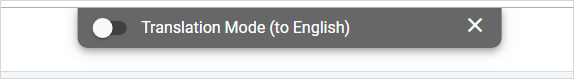
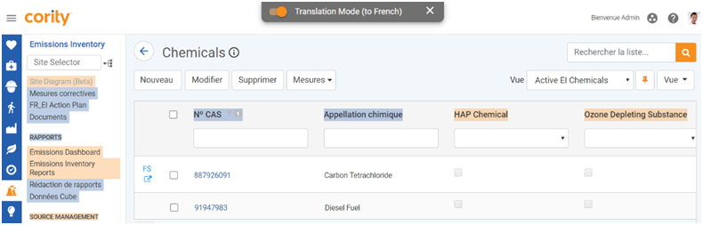
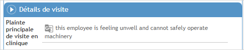

icon:
icon:In your settings, select the Language that you want to work in. All Cority forms and field labels are translated into that language.
Customizing Field Label Translations
If you have appropriate permissions, you can enable Translation Mode and change field labels directly on layouts.
Make sure the Google (or Microsoft) Translate API Key is recorded in the system setting of the same name, the “Translation API Tool” system setting is set to Google or Microsoft as appropriate, and that the “Enable Translation Mode” system setting is selected.
When Translation Mode is enabled, you will see a Translation Mode toggle at the top of the screen. The ‘to’ language will be the language code defined on the Language look-up table that corresponds to the preferred language specified in your user settings. You can click the X to hide the toggle, which will reappear the next time you log in.

When you turn the toggle on, translatable field labels will be highlighted in orange, and any labels that have already been translated will be highlighted in blue.

Right-click on a translatable field and either enter your own translation, or use the Google (or Microsoft) suggestion. The Base Text displays the original label as defined on the layout.
Click Apply. The translated label will now be highlighted in blue. The translation is retained even if you turn off Translation Mode.
Translating Field Values
If the “Enable Translatable Free Text Fields” system setting is turned on, you can translate any text field values that were previously entered in a different language. Any text fields that can be translated are identified with the icon:

Right-click on the text field and choose Translate into <language>. The field text is translated to your local language and becomes read-only. You can click into the field to see the original text and edit if necessary. When you click away again, text reverts to the read-only translation.